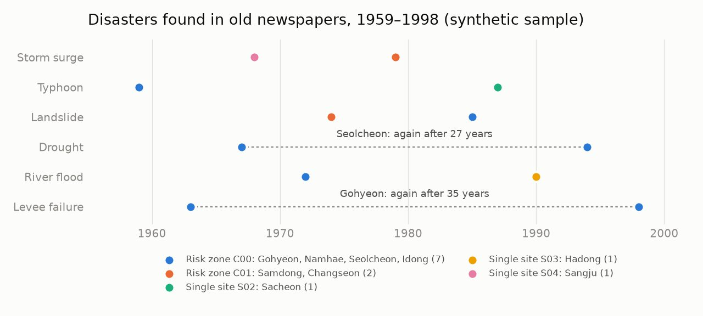
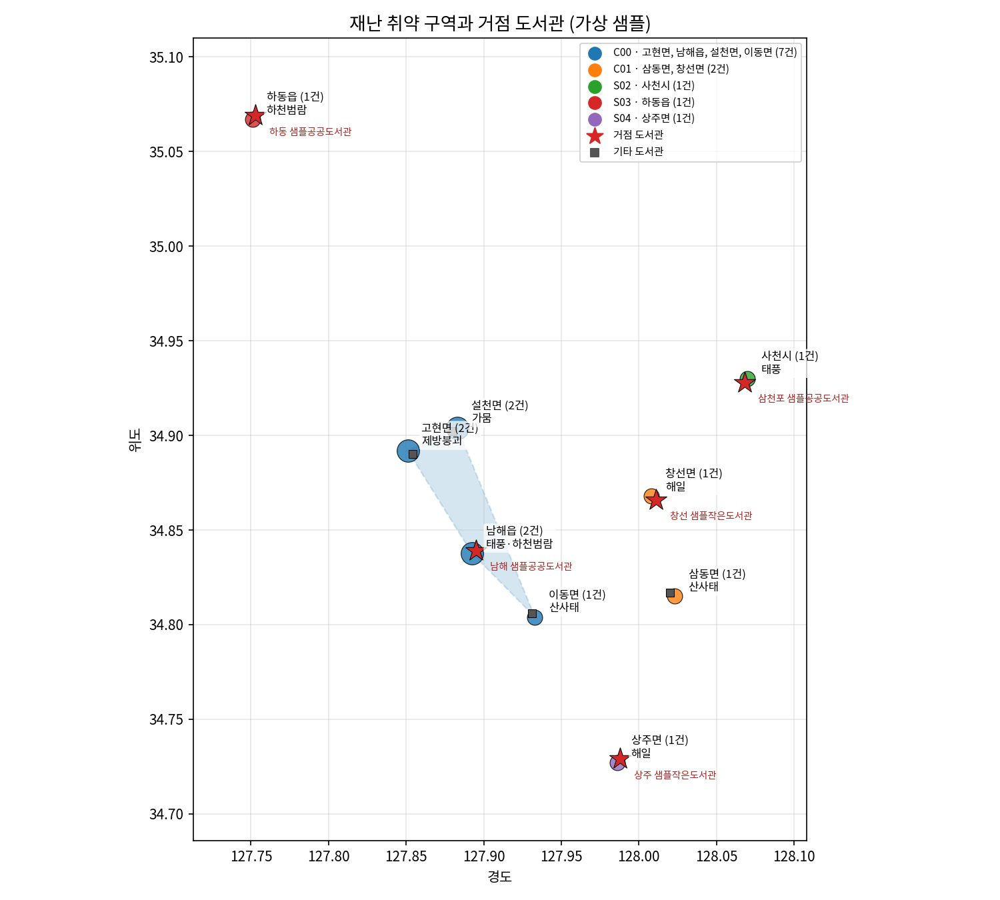

Overview
A pipeline that reads disaster reports in old Korean newspapers, finds zones where they repeat, and picks the nearest library as each zone's hub. It drafts one disaster-prep handbook per zone, paired with prevention research.
- Data
- synthetic sample only: 13 articles, 10 libraries in RDF, a place-name dictionary
- Method
- rule extraction, haversine matching within 5 km, DBSCAN with eps 8 km
- Ran on
- a local Python run of the sample, 2026-09-26
Problem define
Disasters repeat in the same places, and old newspapers remember where. That record sits in mixed Hanja text, not in data a library can use.
No measured number: the repo holds only synthetic sample data.

Solution
A five-step pipeline from newspaper text to handbook drafts named after hub libraries. Each draft leaves a slot for official evacuation guidance and ships with an expert review checklist.
| Value with unit | What it measures (10 words or fewer) |
|---|---|
| 12 of 13 articles | Synthetic articles extracted as events; 1 failed geocoding |
| 2 zones, 3 single sites | DBSCAN risk zones on the synthetic sample |
| 15 matches, 5 handbooks | Paper matches and handbook drafts on the sample |

Process
- Extract. Normalizes mixed Hanja text, then pulls date, type, place and damage by rules with a confidence score.
- Match. Haversine distance from each event to every library; all within 5 km, else the nearest one.
src/spatial.py, - Cluster. DBSCAN on event locations finds repeat zones; the library closest to each zone becomes its hub.
- Draft. Papers matched in three tiers, then one handbook per zone: past record, risk, response.
src/paper_match.py,
Lesson
Every result here comes from synthetic sample data, not real newspapers.
Rules fit the sample's writing style; real OCR text needs more rules or the LLM option, which was not run-tested. Geocoding to town centres stacks same-town events on one point, and unreported disasters are missed.